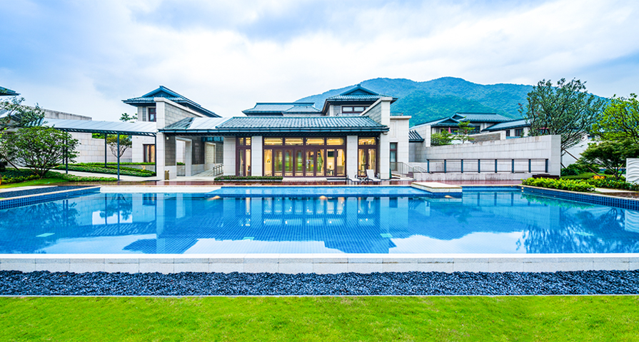

关于从都健康中心
-企业战略
侨鑫集团倾力打造的从都国际生命健康管理中心秉承“整合健康管理”的理念， 致力于打造世界顶
级的生命健康管理中心，汇聚世界顶尖专家团队，搭建领先的医学交流实践平台，创立高品质健
康管理服务新模式。在优美的自然环境中，为中外高净值人士提供全生命周期家族健康管理服务。
通过精准深度体检、疾病风险评估、个性化干预、科学评价干预效果四个环节完成贯穿全生命周
期的健康管理服务。愿景是：更健康，更年轻。让客户不出国门，即可享受世界级的管理服务。
